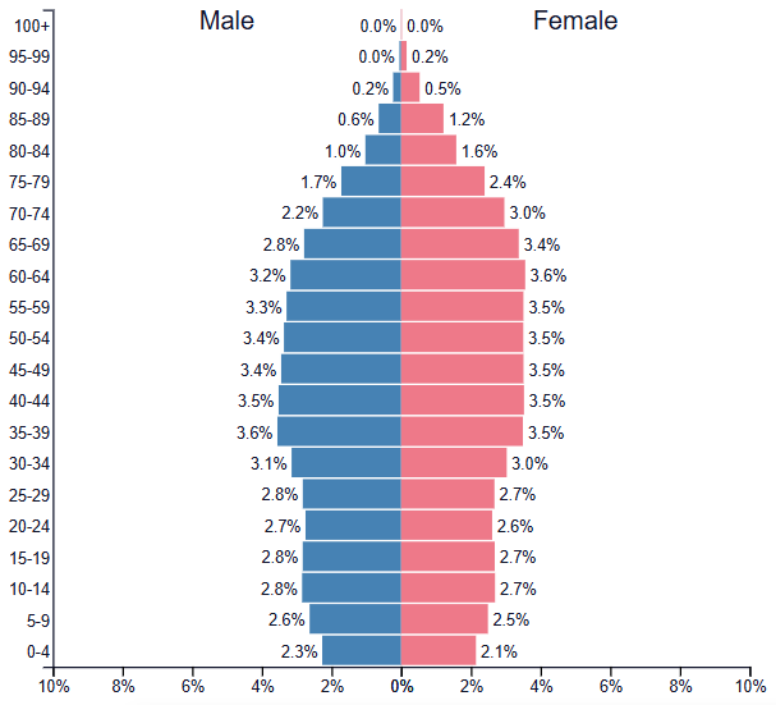
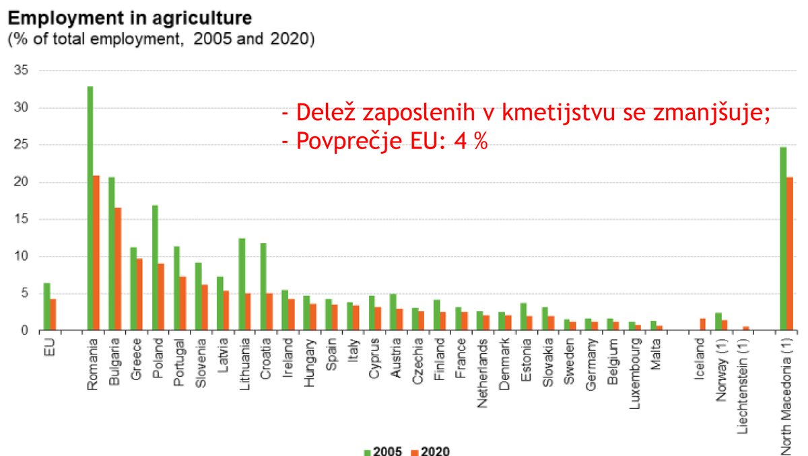
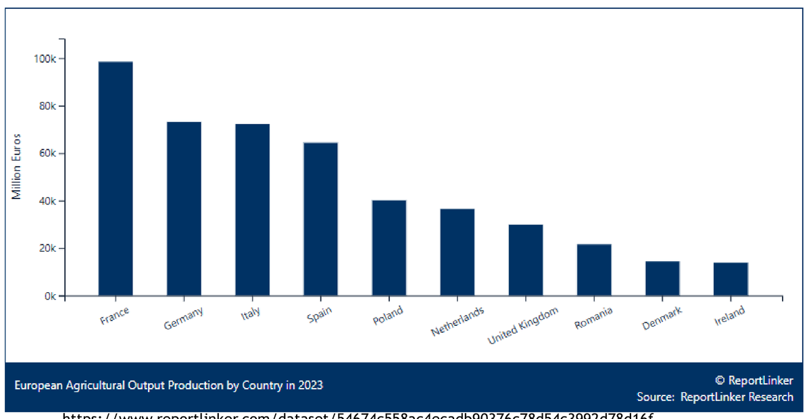
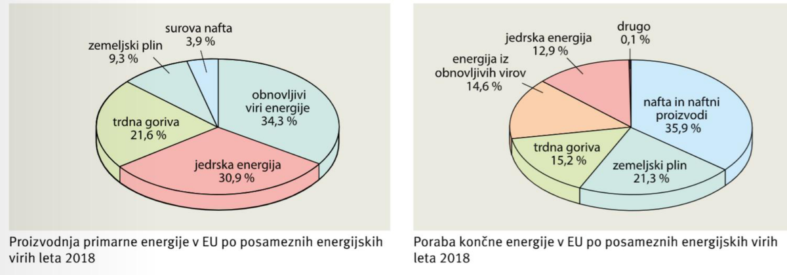
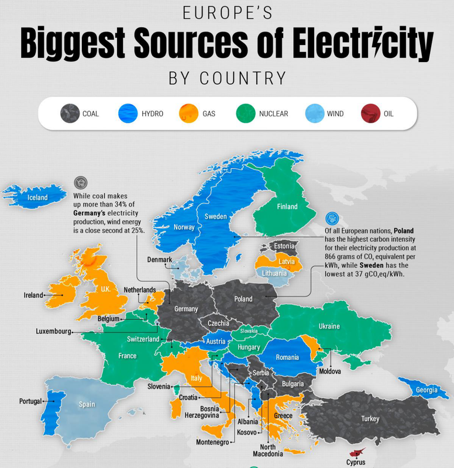
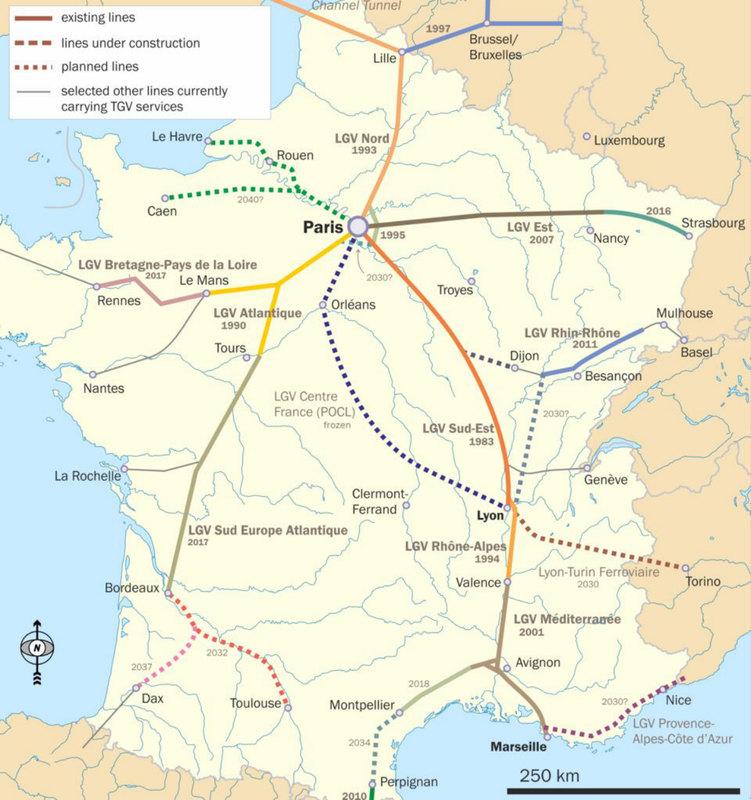
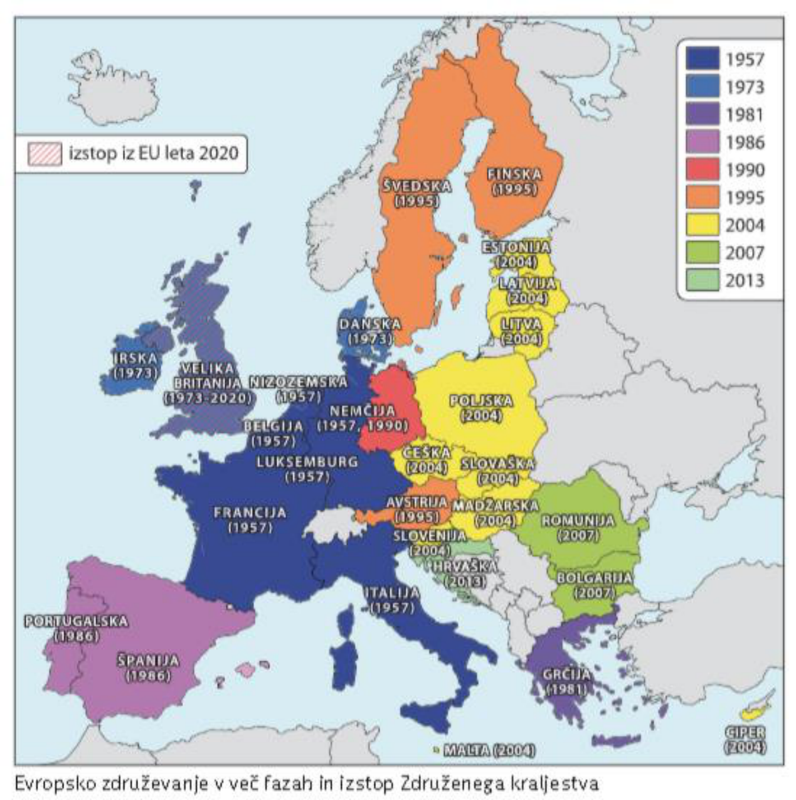
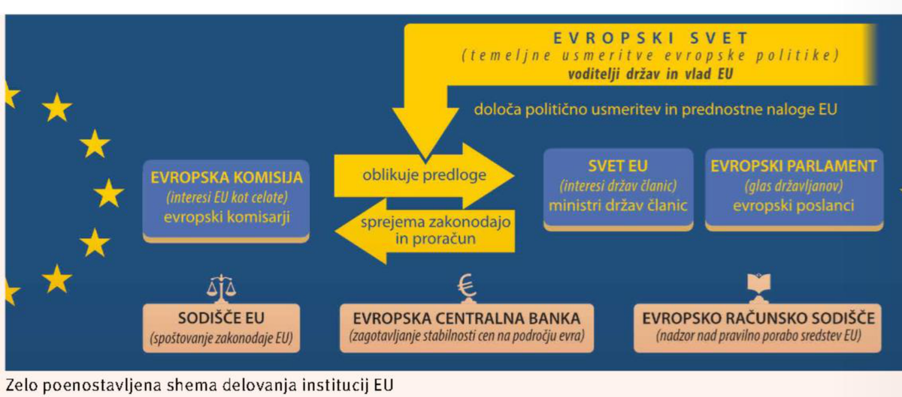

Pojmi
Migracije so selitve, migranti so selivci. Begunci so prisilni migranti; vsi begunci so migranti, niso pa vsi migranti begunci.
Učenje
Skupni družbenogeografski in gospodarski okvir: prebivalstvo, migracije, kmetijstvo, energetika, promet, turizem in EU.
Migracije so selitve, migranti so selivci. Begunci so prisilni migranti; vsi begunci so migranti, niso pa vsi migranti begunci.
Gospodarski, politični oziroma verski, osebni in okoljski vzroki.
Notranje/zunanje, stalne/začasne, sezonske/dnevne, zakonite/nezakonite, prostovoljne/prisilne.
Razlika med priseljenimi in odseljenimi. Pozitiven saldo pomeni prevlado priseljevanja.

Po 2. svetovni vojni so selitve močno vplivale na sestavo in razporeditev evropskega prebivalstva. V 50. in 60. letih so stare države priseljevanja potrebovale nekvalificirano delovno silo, po naftni krizi 1973 so priseljevanje omejevale, od druge polovice 80. let pa so se selitve spremenile po obliki, strukturi in smeri.
| Obdobje | Glavna značilnost | Primeri |
|---|---|---|
| konec 2. svetovne vojne | politične selitve | selitve iz V v Z Nemčijo |
| 1950 - začetek 70. let | delovna sila v stare države priseljevanja | Nemčija, Francija, VB, Belgija, Nizozemska; delavci iz J Evrope in kolonij |
| 1973 - sredina 80. let | upočasnitev rasti, brezposelnost, nadzor priseljevanja | dovoljeno združevanje družin |
| od druge polovice 80. let | begunci, ilegalni ekonomski migranti, legalni migranti znotraj EU, visokokvalificirani migranti, premožni upokojenci | 1992 nekdanja Jugoslavija, 2015 Sirija/Afganistan/Irak, 2022 Ukrajina |
Schengensko območje omogoča gibanje brez kontrol na notranjih mejah, hkrati pa pomeni poostren nadzor zunanje schengenske meje.
Na razporeditev prebivalstva vplivajo lega v zmerno toplem pasu, vpliv Atlantskega oceana, zgodovinsko dogajanje, relief in vodovje. Evropa je po gostoti poselitve na 2. mestu med celinami, prebivalstvo pa je razporejeno enakomerneje kot drugje, čeprav razlike ostajajo velike.
Srednja, Zahodna in Južna Evropa; Padska nižina, Panonska nižina, obale Južne Evrope.
Severna in Vzhodna Evropa, gorata in hladnejša območja.
Black Country - Porurje - Šlezija - Doneški bazen ob približno 50. vzporedniku.
Evropa ima počasno rast prebivalstva, nizko rodnost in velik delež starejših.

Pri odgovorih o gostoti poselitve vedno poveži naravne in družbene dejavnike: ugodno podnebje + nižine + zgodnja industrializacija + promet + mesta.
Z vidika razvitosti ločimo osrednja oziroma centralna območja, kjer se zgošča gospodarska moč in prevladuje priseljevanje, ter robna oziroma periferna območja, ki zaostajajo v gospodarskem in demografskem razvoju. V vzhodnem in jugovzhodnem delu Evrope so se razlike znotraj držav povečale, ker se kapital usmerja predvsem v prestolnice in nekaj večjih središč.
| Območje | Značilnosti | Primeri |
|---|---|---|
| modra banana | visoka gostota, izjemna gospodarska moč, gosto prometno omrežje, IKT in storitve, velika vlaganja multinacionalk | JV Anglija - Beneluks - zahodna Nemčija - Švica - severna Italija |
| sončni pas | prijetno podnebje, visokotehnološka industrija, univerzitetna in gospodarska središča, dobra prometna povezanost | SV Španija - francoska sredozemska obala - severna Italija |
| robna območja | gospodarsko in demografsko zaostajanje, odseljevanje, manjša vlaganja | deli V in JV Evrope |

Evropa ima zelo različne naravne možnosti za kmetijstvo. Najboljše razmere so v nižjem svetu oceanskega in kontinentalnega vlažnega podnebja, najslabše pa v visokih gorstvih in Severni Evropi.
| Značilnost | Zahod Evrope | Vzhod / JV Evrope |
|---|---|---|
| razvitost | visoko razvito, mehanizirano, produktivno | ponekod večji delež zaposlenih in večji delež kmetijstva v BDP |
| delež zaposlenih | zelo nizek; v Franciji, Nizozemski in Danski manj kot 3 % | ponekod 10 % ali več |
| produktivnost | zaradi tehnologije se pridelava ni zmanjšala kljub manj zaposlenim | večja odvisnost od strukture kmetij in kapitala |


Do 50. let 20. stoletja je bil najpomembnejši premog, nato nafta. Po naftni krizi 1973 se je povečalo pridobivanje nafte in plina iz Severnega morja. Po razpadu Sovjetske zveze je rasla odvisnost od ruskih energijskih virov, po letu 2022 pa se je EU bolj usmerila k drugim dobaviteljem in obnovljivim virom.
energija iz naravnih virov pred pretvorbo.
energija, ki jo dejansko porabi potrošnik.
proizvodnja energije ne zadošča potrebam, zato je uvoz nujen.
energetika, promet, industrija in kmetijstvo vplivajo na zrak, vode, prsti in pokrajino.


Pri energetiki je pomembno razlikovati med proizvodnjo elektrike, porabo končne energije in skupno energetsko odvisnostjo. Država je lahko močna v elektriki iz OVE, pa je še vedno odvisna od uvoza nafte za promet.
Prometni tokovi so najgostejši v osrednjih območjih, posebej v modri banani. Najgostejša avtocestna omrežja imajo države Beneluksa, močno opremljeni sta tudi Nemčija in Francija. Po razpadu blokovske delitve Evrope so se okrepili prometni tokovi zahod-vzhod.
| Vrsta prometa | Kaj moraš znati |
|---|---|
| cestni in železniški | gosta mreža v osredjih; hitri vlaki, npr. TGV v Franciji |
| vodni | Ren-Majna-Donava povezuje Severno in Črno morje |
| TEN-T | vseevropsko omrežje cest, železnic, vodnih poti, pristanišč, letališč in terminalov |
| turizem | Evropa je glavni cilj in izvorno območje mednarodnih turističnih tokov; Sredozemlje, Alpe, prestolnice |


Evropska unija je politično-ekonomska zveza 27 evropskih držav. Nastajala je postopno po 2. svetovni vojni, ker se je mir povezoval z gospodarskim in političnim povezovanjem držav.
| Leto | Dogodek | Pomen |
|---|---|---|
| 1951 | Evropska skupnost za premog in jeklo | skupno upravljanje premoga in jekla; ustanovne članice: Belgija, Nizozemska, Luksemburg, Zahodna Nemčija, Francija, Italija |
| 1957 | Evropska gospodarska skupnost | ukinitev carin, skupna trgovinska in kmetijska politika |
| 1992 | Maastrichtska pogodba | pravna vzpostavitev Evropske unije |
| 2004 | največja širitev | 10 novih članic, med njimi Slovenija in pribaltske države |
| 2020 | brexit | izstop Združenega kraljestva iz EU |
prost pretok oseb, storitev, blaga in kapitala.
Evropska komisija, Evropski parlament, Evropski svet; pomembni tudi Sodišče EU, ECB in Evropsko računsko sodišče.
v Sloveniji od leta 2007; evroobmočje ni enako EU.
ni isto kot EU; gre za območje prostega gibanja brez notranjih mejnih kontrol.


Pojasni razliko med migrantom, beguncem in azilantom.
Migrant je vsak, ki se seli, ne glede na vzrok. Begunec je prisilni migrant, ki beži pred nevarnostjo, vojno ali preganjanjem. Azilant je begunec oziroma prosilec, ki v drugi državi zaprosi za mednarodno zaščito.
Kaj je modra banana in zakaj je pomembna?
Modra banana je najpomembnejše osrednje območje Evrope od JV Anglije prek Beneluksa, zahodne Nemčije in Švice do severne Italije. Ima visoko gostoto poselitve, veliko gospodarsko moč, gosto prometno omrežje in pomembna evropska mesta.
Pri vprašanjih o energetiki vedno poveži tri stvari: EU porabi več energije, kot je sama proizvede, zato je odvisna od uvoza; po letu 2022 je zmanjševanje odvisnosti od ruskih virov postalo še pomembnejše; obnovljivi viri zmanjšujejo uvozno odvisnost, vendar zahtevajo omrežja, hranilnike in čezmejno povezovanje.
Evropa se segreva hitreje od svetovnega povprečja, zato se povečujejo tveganja za vročinske valove, suše, požare, poplave in obremenitev vodnih virov. To je uporabno pri razlagi degradacije okolja, turizma in kmetijstva.
Najmočnejši turistični tokovi so usmerjeni proti Sredozemlju, Alpam in velikim mestom. Zato lahko pri turizmu vedno razložiš tudi posledice: sezonskost, pritisk na obale, promet, porabo vode in rast cen stanovanj v turističnih območjih.
To niso dodatne podrobnosti za učenje na pamet, ampak povezave med temami: energija ↔ politika ↔ promet; turizem ↔ litoralizacija ↔ okoljski pritiski; podnebne spremembe ↔ kmetijstvo ↔ vodni viri.
Viri dopolnitve: Eurostat, Evropska komisija, European Environment Agency, uradne strani EU.
Klikni kartico, da obrneš odgovor. Te kartice so dodane neposredno na konec teme za hitro ponavljanje.
Osnovna snov je povzeta iz predstavitev 016-021. Dopolnitve za razumevanje so dodane tam, kjer pomagajo povezati pojme ali razložiti vzroke in posledice. Dopolnitve so označene kot "Dodano za razumevanje" in so povzete iz preverjenih virov: Eurostat, European Environment Agency, Encyclopaedia Britannica, uradne strani EU in drugi preverjeni viri.